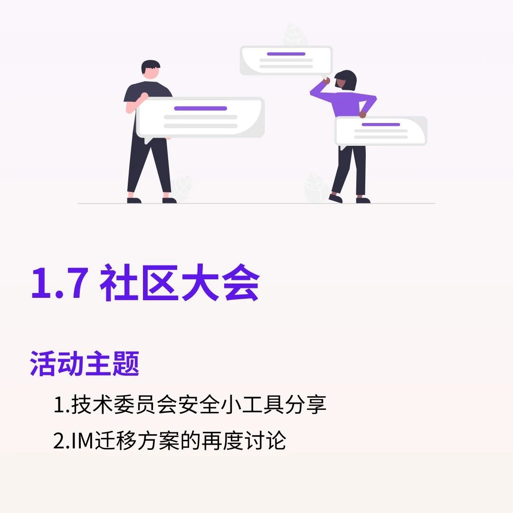

← Back to Archive
社区大会 | 安全工具分享，IM迁移方案讨论
发布时间: 2024-01-06 12:21:06
分类:
社区大会
⭐️ 活动主题： 1. 技术委员会安全小工具分享 2. IM迁移方案的再度讨论 ⏰ 活动时间： 01月07日 北京时间下午2点 💻 活动地点： SeeDAO Discord: 广场→语音台

轻触阅读原文
The SeeDAO
向上滑动看下一个